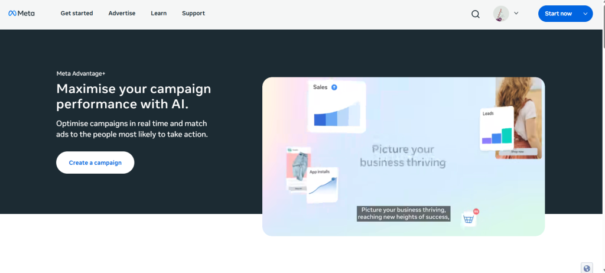
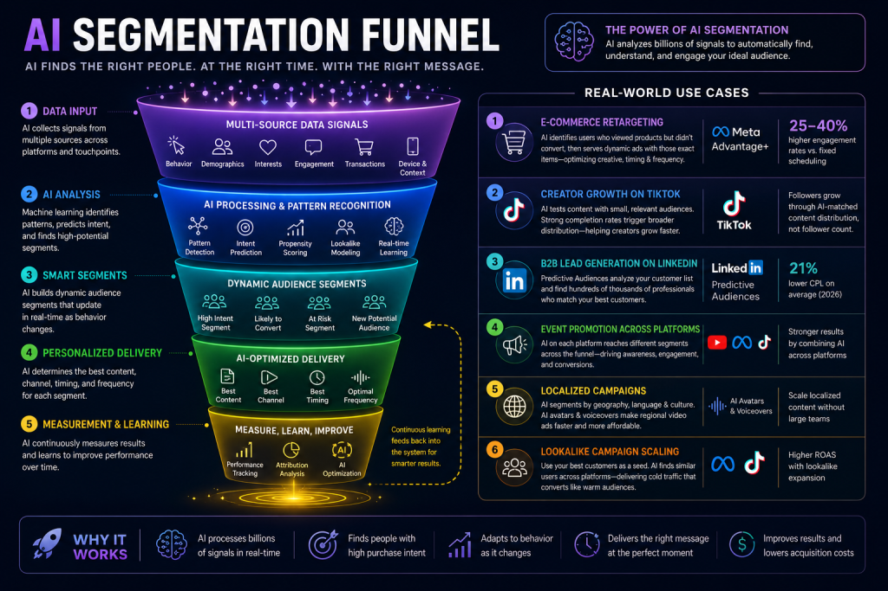

Introduction
There's a moment every marketer recognizes. You open an app, and the first ad you see feels almost too relevant — the exact product, the exact timing, practically the exact conversation you were just having with a friend. That's not coincidence. It's the result of AI audience segmentation working quietly in the background, processing thousands of behavioral signals to decide that you, specifically, should see that ad right now.
In 2026, AI segmentation has fundamentally changed what social media advertising looks like. The old world of manually stacking interest categories, building lookalike audiences by hand, and obsessing over demographic slices is giving way to something much more sophisticated — and, for most marketers, much more effective.
The three largest ad platforms — Meta, Google, and TikTok — have each shipped major AI-driven features that fundamentally change how campaigns are built, optimized, and measured. The shift isn't incremental. Brands using AI tools for content creation alongside platform-native AI targeting are now seeing performance gaps that simply can't be explained by creative quality alone — the systems they're using to find the right audiences are just better.
In this guide, you'll learn exactly how the major platforms use AI to segment audiences, what technologies are doing the heavy lifting, where each platform excels and falls short, and — critically — how to actually use these systems to your advantage without handing all control to the algorithm.
Quick Summary
What is AI audience segmentation? It's the use of machine learning, behavioral data, and predictive modeling to automatically group social media users into meaningful segments — then match the right content or ad to each group in real time.
Why does it matter in 2026? Privacy changes have eroded traditional targeting data, but AI compensates by finding patterns in first-party signals that manual methods miss. Brands using AI targeting see 23% higher conversion rates and 31% lower customer acquisition costs compared to manual targeting approaches.
Which platforms do it best? Meta leads for e-commerce and broad reach. LinkedIn dominates B2B professional targeting. TikTok wins on content-driven discovery. YouTube excels at intent-based video campaigns.
Who should care most? Performance marketers, social media managers, small business owners running paid ads, content creators trying to grow organically, and any brand spending meaningful budget on social.
What Is Audience Segmentation?
At its core, audience segmentation is simply the practice of dividing your potential customers or followers into smaller groups based on shared characteristics — so you can speak to each group more relevantly.
Traditionally, that meant demographics: age, gender, location, maybe a few broad interests. A fitness brand might target "women, 25–40, interested in health and wellness." Functional, but blunt.
Modern platforms use AI and real-time data to build and update segments automatically, rather than requiring manual list creation. Instead of "women interested in fitness," an AI-powered segment might look like: "women who have watched at least 3 workout videos in the past 7 days, clicked on athleisure ads in the past 30 days, and whose engagement patterns suggest they're within the consideration phase of a purchase decision." That's a completely different targeting depth — and it's now the baseline, not a premium feature.
Why AI Matters for Audience Segmentation in 2026?
The data volume problem is real
The average person generates thousands of behavioral data points on social platforms every day. Scroll speed, pause time on specific content, re-watches, clicks, saves, comments — the signal volume is staggering. No human analyst can process this at scale. AI can.
Privacy changed the game
Apple's App Tracking Transparency framework, evolving cookie policies, and tightening global privacy regulations all chipped away at the third-party data pipeline that targeting once relied on. Advantage+'s AI-native approach doesn't depend on the third-party data that privacy changes eroded — it works from first-party behavioral signals and learns from your own conversion data. Every major platform has made the same pivot.
Predictive behavior beats historical behavior
Old segmentation looked backward: "this person bought running shoes six months ago." AI segmentation looks forward: "this person is likely to purchase running shoes in the next two weeks, based on a cluster of signals we're seeing right now." That predictive layer is what makes modern AI targeting feel almost prescient.
Less wasted spend
AI platforms reduce audience research from 4–6 hours per campaign to 15–30 minutes while surfacing data-driven insights from first-party data, social listening, search trends, and competitive intelligence. That efficiency gain compounds across every campaign you run.
How AI Actually Segments Audiences?
Understanding the mechanics helps you use these systems more intelligently. Here are the core techniques at work across platforms.
Machine Learning Models
These analyze patterns across massive datasets — past purchases, click sequences, content engagement, device usage — and build probabilistic profiles of what different user types are likely to do next. The models improve continuously as more conversion data flows in.
Predictive Analytics
Rather than grouping users by what they've done, predictive models estimate what they'll do. AI can enable a deeper understanding of customer datasets to deliver more precise, adaptive, and scalable segmentation than manual methods. When paired with a durable identity infrastructure that resolves all known and unknown data, AI-powered segmentation enables better personalization and marketing efficiency.
Lookalike Modeling
You feed the system a "seed audience" — your best customers, your highest-value converters, your most engaged followers. The AI identifies shared patterns across that group, then finds other users on the platform who match that profile. It's a force multiplier for audience building.
Behavioral Segmentation
This goes beyond demographics to group people by actions. Frequent purchasers, video completers, comment leavers, link clickers — each of these behavioral clusters tells a story about intent and engagement depth that demographic data alone never could.
Natural Language Processing (NLP)
NLP allows platforms to understand the meaning behind user-generated content — comments, captions, queries — not just keywords. When someone asks Meta AI a question about camping gear, that conversational intent now feeds into the ad delivery system.
Computer Vision
Platforms analyze what's actually in videos and images — not just metadata tags — to categorize content and match it to users whose viewing patterns suggest they'll engage. TikTok's system is particularly advanced here.
Intent-Based Targeting
AI-powered personalization moves beyond basic demographic targeting to predictive behavioral analysis. Intent targeting identifies users who are actively researching a category — not just passively interested — and flags them as high-priority targets for conversion-focused campaigns.
For non-technical marketers, the practical takeaway is this: you don't need to understand the models. You need to understand what inputs make them better — and that's almost always better data and better creative.
How Major Social Platforms Use AI for Audience Segmentation?
Meta (Facebook and Instagram)
Meta is arguably the furthest along in replacing manual targeting with AI-driven automation, and the changes in 2026 are substantial.
Advantage+ Audience
Advantage+ Audience is Meta's default AI targeting system that treats your inputs as suggestions, not rules. When you add demographics or interests to an Advantage+ campaign, you're giving the algorithm a direction, not a constraint. The system processes your inputs alongside first-party pixel data and conversion history to find the actual best audience — which is often different from the one you'd have built manually.
According to Meta's internal benchmarks, switching to Advantage+ cuts CPA by up to 32% in e-commerce and lead generation verticals. That's a meaningful number — and it tracks with what performance marketers are reporting in practice.
The Andromeda Architecture
Meta's Andromeda update means broad targeting often outperforms narrow interest stacking. The underlying model, Andromeda, is a deep learning architecture that processes real-time conversion signals, creative engagement patterns, and on-platform behavior simultaneously. In 2026, your ad creative acts as a filter. Meta's AI observes who engages with different creative concepts and optimizes delivery accordingly.
AI Chat Signals
One of 2026's most significant developments: since December 2025, conversations users have with Meta AI across WhatsApp, Messenger, Instagram, and Facebook have been feeding into Meta's ad delivery algorithms as intent signals. Anonymized conversational data from over a billion Meta AI users now flows into ad targeting. Purchase intent expressed in a chat conversation has become a targeting input. The implications for personalization — and for privacy scrutiny — are significant.
What this means for marketers:
- Prioritize first-party data and server-side tracking (Conversions API)
- Focus budget on creative diversity, not audience granularity
- Provide clear creative variations so the AI can figure out which creative resonates with which user — rather than trying to manually segment audiences
- Require at least 50 conversions per week for stable AI optimization
- Many advertisers report conversion improvements of 25–40% using automated segments compared to traditional targeting
AI-generated visuals can further accelerate Meta creative testing — tools like Adobe Firefly let you generate multiple visual variants quickly, giving the algorithm more creative surface area to learn from.

TikTok
TikTok's approach to segmentation is different from every other platform — and that difference is worth understanding.
The For You Page as Segmentation Engine
TikTok doesn't ask you to build an audience. It builds one for you. Broader targeting often outperforms narrow targeting on TikTok because the algorithm excels at finding converters within large audience pools. The For You Page is a real-time testing machine. Every video gets shown to a small initial audience; if engagement signals are strong (watch time, completion, shares, saves), the algorithm expands distribution to increasingly larger cohorts that match similar behavioral profiles.
TikTok delivers approximately 6,268 average impressions per post versus Instagram's 2,635, and engagement rates are 5–8x higher. TikTok is also better for new creator discovery since follower count isn't a ranking factor.
Content Categorization AI
TikTok's computer vision, audio analysis, and text detection systems understand what's actually happening in videos — not just what hashtags describe them as. This allows the algorithm to match content to users whose viewing history contains genuinely similar material, even if the surface-level topics seem unrelated.
Custom and Lookalike Audiences
TikTok Custom Audiences enable precise retargeting by reaching users who have already engaged with your brand through website visits, app activity, customer data, or platform engagement. For lookalike audiences, quality matters more than size: aim for at least 50 actual conversions in your seed audience rather than relying on a large but shallow contact list.
The Smart+ Automation Layer
TikTok's Smart+ campaigns operate similarly to Meta's Advantage+ — you set an objective and budget, and AI handles placement, audience, and bid optimization. TikTok Symphony has enabled 70% faster content production and rapid variant testing.
For creators running multilingual or localized campaigns on TikTok, AI avatar tools for multilingual voiceovers can expand reach into new language markets without the cost of full localization production.
LinkedIn's competitive advantage is simple: it has the most accurate and voluntarily maintained professional database on earth. In 2026, AI makes that data significantly more actionable.
Predictive Audiences
LinkedIn's Predictive Audiences cut CPL by 21% on average versus standard targeting — but only when the conversion seed data is high-quality (100+ conversions minimum, ideally 500+) and the audience trains for 4–6 weeks before optimization.
Powered by LinkedIn's predictive AI, LinkedIn Campaign Manager has added predictive audiences to the suite of targeting tools — easily identifying and reaching the right audience at the right moment along their buying journey. The system combines your first-party conversion data with LinkedIn's behavioral graph to find users predicted to take similar actions, even if they don't match your typical demographic profile.
B2B-Specific AI Capabilities
Predictive Audiences now power roughly 41% of LinkedIn Sponsored Content spend. Combined with Maximum Delivery and Target Cost bidding, AI-managed campaigns consistently outperform manual Cost Cap and Manual CPC by 14–22% on CPL.
The platform's AI also detects "coalition roles" — the full buying committee involved in B2B decisions, not just the obvious job title. A SaaS purchase decision might involve a VP of Engineering, a CFO, and a security lead. LinkedIn's AI can identify and reach the full committee, not just the most visible stakeholder.
What B2B marketers should know:
- Warm audiences (website retargeters, email list matches) convert significantly better than cold job-title targeting
- Thought Leader Ads often achieve 1–2% CTR due to their organic appearance, and deliver up to 40% lower CPL than traditional formats
- AI bidding outperforms manual bidding in most scenarios — let the system optimize within your budget constraints
- Connect your CRM to Campaign Manager for better seed data quality
Part of a broader AI marketing strategy, LinkedIn AI segmentation works best when paired with content that genuinely addresses the professional pain points of each segment.
YouTube
YouTube benefits from Google's full ecosystem intelligence — search history, Gmail signals, Maps activity, Play Store behavior — layered on top of video-specific engagement data. The result is some of the most sophisticated intent-based audience modeling available anywhere.
Custom Intent Audiences
These let you target users based on recent search behavior. Someone who has searched "best project management software for remote teams" in the past two weeks is a fundamentally different audience from someone who merely follows tech channels. Custom intent closes that gap.
Predictive Audience Models
YouTube's AI builds segments around anticipated future behaviors. AI-powered personalization moves beyond basic demographic targeting to predictive behavioral analysis — for YouTube, that means identifying users predicted to purchase within a defined window, not just those who've purchased before.
Demand Gen Campaigns
Google's Demand Gen campaign type combines YouTube, Discover, and Gmail placements with AI audience optimization. The system tests creative across audience segments simultaneously and reallocates impressions toward whichever combination is driving the strongest engagement signals.
Placement and Timing Optimization
YouTube's AI doesn't just find the right person — it finds the right moment. Users who've just finished watching a competitor's product review represent a very different opportunity than users passively browsing. The system weights these contextual signals in its targeting decisions.
For video-forward brands creating segmented campaigns across multiple audience types, AI talking avatar generators offer a practical way to personalize video content for each segment without shooting separate productions.
X (Formerly Twitter)
X's ad platform underwent significant AI reconstruction in early 2026. The rebuilt system moves away from rigid demographic segments toward contextual and semantic relevance.
Instead of targeting "people interested in technology," X's AI now understands the conversation context around a post — the topics being discussed, the sentiment of the thread, the behavioral patterns of people engaging with similar content — and places ads where they're semantically aligned with active interests.
This makes X particularly strong for timely, conversation-adjacent campaigns: product launches, live events, trending topic adjacency, cultural moments. The AI finds the audience in the conversation rather than requiring you to define the audience in advance.
For brands creating voice-led content or audio ads across social platforms, Murf AI enables professional-quality voiceovers tailored to different audience segments without studio production costs.
Platform Comparison Table
| Platform | Key AI Features | Segmentation Focus | Best For | Biggest Strength | Biggest Limitation |
|---|---|---|---|---|---|
| Meta | Advantage+, Andromeda, AI Chat Signals | Behavioral + predictive intent | E-commerce, lead gen, broad reach | 32% CPA reduction vs. manual; scale | Less targeting transparency and control |
| TikTok | FYP discovery, Smart+, content categorization AI | Behavioral + content affinity | Viral discovery, Gen Z, DTC brands | Highest organic reach; 5–8x engagement vs. other platforms | Creative dependency; weak B2B utility |
| Predictive Audiences, AI bid optimization | Professional + firmographic | B2B lead gen, enterprise, SaaS | Most accurate professional data; 21% CPL reduction | High CPCs; requires significant conversion volume for AI to optimize | |
| YouTube | Custom Intent, Demand Gen, predictive models | Search + watch intent | Video campaigns, full-funnel | Google ecosystem signals; intent depth | Higher creative production requirements |
| X | Semantic ranking, contextual AI delivery | Conversation + interest context | Timely campaigns, live events | Real-time relevance | Smaller user base; evolving ad product |
Real-World Use Cases
Understanding how this works in practice is more useful than abstract theory. Here are scenarios where AI segmentation creates genuine marketing leverage.
E-Commerce Retargeting
An online furniture brand uses Meta Advantage+ with a product catalog. The AI identifies users who've viewed specific products but haven't converted, and serves dynamic ads featuring those exact items — adjusting creative format, timing, and frequency based on each user's behavioral signals. Early adopters report 25–40% engagement rate improvements versus fixed scheduling when AI controls not just who sees the ad but when.
Creator Growth on TikTok
A creator in the personal finance space posts content without a large following. TikTok's algorithm tests the video with small audiences of users who've engaged with similar financial content. Strong completion rates trigger broader distribution to a segment the creator has never explicitly targeted. Follower growth becomes a byproduct of AI-matched content distribution, not a prerequisite for it.
B2B Lead Generation on LinkedIn
A cybersecurity company uploads a list of 800 customers who converted over the past year. LinkedIn's Predictive Audiences system analyzes that seed list, identifies patterns across job title, company size, engagement history, and seniority, then builds a prospecting audience of several hundred thousand professionals who match the conversion profile. 2026 data confirms 21% lower CPL on average versus standard targeting for well-seeded Predictive Audiences.
Event Promotion Across Platforms
A B2C brand promoting a product launch uses YouTube Custom Intent to reach users who've recently searched for related products, Meta Advantage+ for scaled retargeting of existing customers, and TikTok Smart+ for organic discovery among new audiences. The AI systems on each platform work independently but complementarily, reaching different segments at different funnel stages.
Localized Campaigns for Regional Audiences
Brands with regional variations in their products use AI segmentation to serve tailored content by geography, language, and cultural context. Combined with AI avatar tools for multilingual voiceovers, even small teams can produce regionally adapted video ads without the cost of full localization teams.
Lookalike Campaign Scaling
An e-commerce brand with 5,000 high-value customers uses that list as a seed audience across Meta and TikTok. Both platforms' AI identifies common behavioral patterns and expands targeting to reach users who fit the same profile — generating cold traffic with conversion characteristics closer to warm audiences.

Common Mistakes Marketers Make
Knowing the tools isn't enough. The way you use them matters just as much.
Over-targeting (and fighting the algorithm)
The most common mistake in 2026 is still over-constraining audience definitions. Meta broad targeting represents the biggest structural shift in paid social since the iOS 14 privacy changes. Stacking 12 specific interest categories doesn't make your targeting more precise — it starves the algorithm of the data it needs to find your actual converters. Start broader, not narrower.
Ignoring first-party data
The foundation of AI-powered segmentation is a solid first-party data strategy. This data may include demographic details, behavioral signals, transactional data, and contextual inputs from digital and physical touchpoints. Marketers who feed the system weak data — broken pixels, low-quality conversion events, small customer lists — get weak results. Garbage in, garbage out applies more in AI-driven systems than anywhere else.
Relying entirely on automation without strategy
Handing everything to the algorithm works better than it used to — but it still requires strategic inputs. The AI can find your audience, but you need to define what "converting" means, what value you're offering, and what message actually resonates. The competitive advantage shifts from manual campaign optimization to strategic input quality, first-party data depth, and creative asset diversity.
Weak creative as a constraint
On every platform in 2026, creative quality is the single most important variable you control. The era of manual audience micro-segmentation is giving way to an era of creative-first campaign strategy. Meta's algorithm needs 15 to 50 or more active creative assets per campaign to optimize effectively. If your creative pool is thin, the AI has less to work with.
Not testing or comparing
Always maintain some manual campaigns for comparison. Running Advantage+ without comparison makes it impossible to know if it's actually better. The same principle applies across platforms. AI-driven optimization can mask underperformance if you never benchmark it against alternatives.
Treating segments as permanent
Dynamic segmentation is AI technology that automatically updates customer groups as behaviors or attributes change, ensuring campaigns remain relevant and timely. Audience behaviors shift — seasonally, economically, culturally. Segments built in Q1 may not reflect your audience in Q3. Monitor, refresh, and adapt.
How Marketers Can Use AI Segmentation Better?
These are the practices that separate marketers who get solid results from AI tools and those who wonder why the algorithm "isn't working."
Start broad, then narrow with data
Counter to every instinct, broader audiences perform better in AI-driven systems — initially. The algorithm needs freedom to discover where your converters actually are. Once you have conversion data, the system narrows itself.
Feed the system better inputs
Server-side tracking (Meta's Conversions API, TikTok's Events API, LinkedIn's Insight Tag) should be properly implemented before you run AI-optimized campaigns at any meaningful scale. This is the single highest-leverage technical investment you can make.
Diversify your creative
Give each platform's AI 5–10 meaningfully different creative concepts per campaign — not 10 versions of the same idea. Variety in angle, format, hook, and visual style gives the AI more to test and more to learn from.
Use first-party data as a seed, not a constraint
Upload your customer lists and conversion data to every platform you use. Don't use them as strict targeting lists — use them as seeds for AI expansion and as signals for optimization. This is how you get the most out of Predictive Audiences on LinkedIn, Lookalike expansion on Meta, and Custom Intent on YouTube.
Read your platform dashboards critically
Real-time analytics platforms powered by machine learning monitor campaign performance across channels, identify which creative assets drive conversions, automatically allocate budget to top performers, and pause underperforming elements before wasting spend. Most platforms now surface AI-generated insights automatically — but they require human judgment to interpret and act on correctly.
Combine platform AI with third-party intelligence
Tools like SparkToro, Audiense, and Pulsar Platform offer audience intelligence that platform-native tools don't. Use them for research before campaigns, then apply those insights as directional inputs when setting up AI targeting. These are excellent AI marketing tools to layer on top of platform-native systems.
Benefits and Risks of AI Segmentation
No honest assessment skips the downsides.
Benefits
- Better personalization at scale. AI can match messages to micro-segments that manual targeting would never find.
- Higher conversion rates. Brands using AI targeting see 23% higher conversion rates on average compared to manual approaches.
- Efficiency gains. Significantly less time spent on audience research and campaign optimization.
- Adaptive learning. Segments improve automatically as more conversion data flows in — unlike manual lists, which stagnate.
- Privacy compatibility. AI-driven first-party data models are built for the post-cookie world.
Risks
Privacy concerns are real. The ad delivery algorithm now processes conversational intent data from Meta AI interactions alongside traditional behavioral, demographic, and engagement signals. That's powerful for marketers, but it raises genuine questions about where the line between personalization and surveillance sits.
Bias in training data. AI models learn from historical data, which may encode existing biases. If your current customers skew heavily toward a particular demographic, your AI-expanded audiences will too. Platforms run fairness audits, but no system is perfect.
Echo chambers and over-optimization. Algorithms that optimize relentlessly for engagement can trap audiences in narrow content loops, seeing only what confirms their existing interests. For brands, this means you might efficiently reach people who already agree with you — but miss audiences you haven't yet spoken to.
The automation gap. Over-reliance on AI can create a skills gap. Marketers who never learn manual targeting fundamentals have less intuition for diagnosing problems when AI optimization goes wrong.
Best Practices for Small Businesses and Creators
AI segmentation isn't just for enterprise advertisers. In many ways, it levels the playing field.
Start with what you have
You don't need a massive customer database. Even 300–500 email addresses or website visitors are enough to start seeding AI audiences on most platforms. Quality matters more than quantity.
Let the algorithm do early discovery work
Small budgets work best when you resist the urge to micro-target. Advantage+ Audience can work for small budgets but performs best with budgets above $50 per day. Below that threshold, consider using slightly more directional targeting to compensate for lower data volume.
Use organic content as a segmentation signal
For creators and small businesses, your organic content reach is valuable audience data. The people who engage with your TikTok videos, save your Instagram Reels, or comment on your LinkedIn posts are all telling the AI something about who your audience is. Engagement actions feed the algorithm whether or not you're running paid ads.
Lean on platform-native AI tools first
Before investing in third-party audience tools, exhaust what the platforms give you for free: Meta's Audience Insights, TikTok's Creator Center analytics, LinkedIn's Audience Intelligence dashboard. These surface useful segmentation signals even without paid ad campaigns.
Explore AI-powered content tools for segment-specific creative
Small teams using AI creator tools can produce creative variants for different audience segments quickly and affordably — enabling more robust testing without agency-level production budgets.
Focus on one platform AI system first
Don't try to master Meta Advantage+, TikTok Smart+, and LinkedIn Predictive Audiences simultaneously. Pick the platform where your audience most clearly lives, learn that platform's AI system deeply, and expand from there once you have results.
Future of AI Audience Segmentation
The trajectory is clear, even if the timeline is uncertain.
More agentic automation. AI is moving from optimization assistant to campaign manager. Meta publicly stated it expects to offer fully AI-automated ad campaigns by the end of 2026 — an advertiser provides their business URL and a budget, and AI handles creative generation, audience targeting, placement selection, and bid optimization. This represents a fundamental shift in what the "advertiser" role actually means.
Cross-platform intelligence. Right now, each platform's AI operates in a silo. Expect increasing integration — whether through identity infrastructure providers like LiveRamp or through first-party clean room arrangements — that allows brands to build a more unified picture of audience behavior across platforms.
Contextual signals replacing behavioral signals. As behavioral tracking continues to erode under privacy regulation, contextual AI (understanding the content environment around an ad, not the specific user seeing it) will gain ground. The platforms that occupy this spectrum have diverged significantly — some are doubling down on breadth, others on workflow automation, and a handful on the depth of audience understanding.
Generative AI in creative + targeting. The next wave combines audience segmentation with AI-generated creative. Adobe's Asset Amplify can generate entire websites, social media posts, and print collateral catered toward specific audience segments — and we'll see this kind of generative-plus-segmentation integration become standard across ad platforms.
Tighter regulatory pressure. GDPR, CCPA, and emerging frameworks in Asia and Latin America will continue shaping how platforms can use data. AI systems built on first-party, consent-based data will be more durable than those relying on inferred behavioral signals.
The winners in this environment won't necessarily be those with the biggest budgets or the most complex tech stacks. They'll be marketers who understand both the capability and the constraints of these systems — and who combine AI's computational power with genuinely human strategic judgment.
Final Verdict
AI audience segmentation in 2026 is not a feature — it's the infrastructure. Every major social platform has rebuilt its targeting core around machine learning models that outperform manual targeting in most scenarios, and the gap is widening every quarter.
For most marketers, the right response is not to fight this shift or hand everything to the algorithm. It's to become better at the inputs: cleaner tracking data, more diverse creative, clearer conversion objectives, and a genuine understanding of who your audience actually is before you ask the AI to find more of them.
Start with one platform. Implement server-side tracking. Upload your first-party data. Give the AI enough creative to work with. Then let it learn. The performance improvements tend to arrive faster than most marketers expect — and the compounding effect of better data over time is significant.
The era of guessing who your audience is has ended. The era of collaborating intelligently with AI systems to find them has fully arrived. The brands that adapt to that reality are already widening their lead.
Frequently Asked Questions
What is AI audience segmentation?
How does AI help social media targeting?
Which platform has the best AI segmentation?
Is AI audience targeting better than manual targeting?
How can small businesses use AI segmentation?
Is AI segmentation safe and privacy-friendly?
What is predictive audience segmentation?
For deeper coverage of the tools that power AI-driven marketing workflows, explore our AI marketing strategies hub and the latest AI tools for content creation reviews.